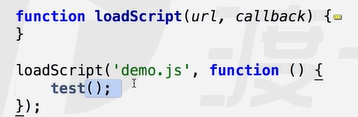

一、异步加载JS
- js加载的缺点
- JS加载会阻塞后续页面，但是有时候加载工具方法没必要阻塞文档，过多js加载会影响页面效率，一旦网速不好，那么整个网站将等待js加载而不进行后续渲染等工作
- javascript异步加载的三种方案
defer：等到dom文档全部解析（dom树完全生成）完才会被执行，可以将JS写到标签内部，只有IE能用。
async：加载完就执行，async只能加载外部脚本，不能把js写在script标签里
- 创建script，插入到DOM中，加载完毕后callBack(实现异步加载，按需加载)

- 将上面两种方法封装成函数

二、JS加载时间线
创建Document对象，开始解析web页面。这个阶段document.readyState = ‘loading’。
遇到link外部css，创建线程加载，并继续解析文档。
遇到script外部js，并且没有设置async、defer，浏览器加载，并阻塞，等待js加载完成并执行该脚本，然后继续解析文档。
遇到script外部js，并且设置有async、defer，浏览器创建线程加载，并继续解析文档。对于async属性的脚本，脚本加载完成后立即执行。（异步禁止使用document.write(),他会消除之前的整个文档并替换成自己的文档）
遇到img等，先正常解析dom结构，然后浏览器异步加载src，并继续解析文档。
当文档解析完成，
document.readyState = 'interactive'，所有设置有defer的脚本会按照顺序执行。（注意与async的不同,但同样禁止使用document.write()）;document对象触发DOMContentLoaded事件，这也标志着程序执行从同步脚本执行阶段，转化为事件驱动阶段。
当所有async的脚本加载完成并执行后、img等加载完成后，document.readyState = ‘complete’，window对象触发load事件。
从此，以异步响应方式处理用户输入、网络事件等。